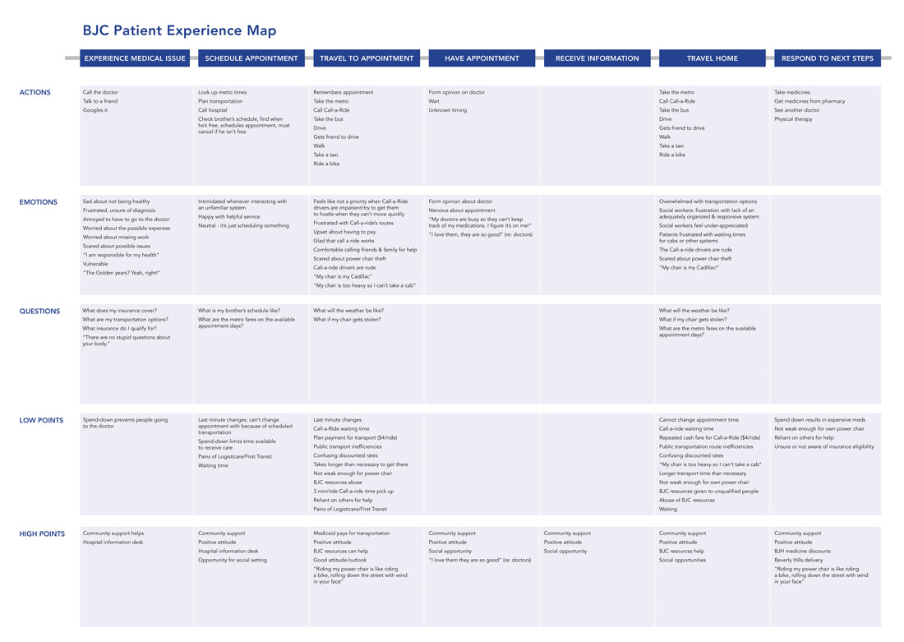
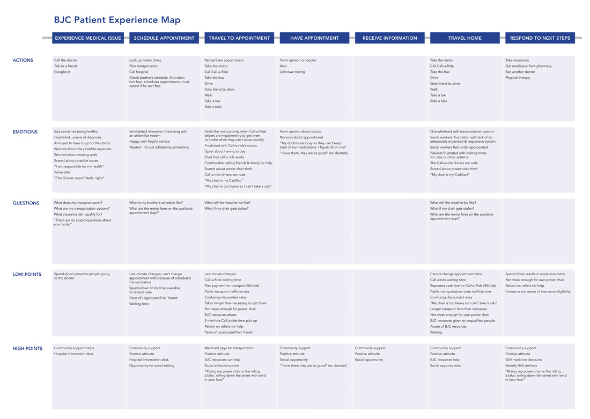
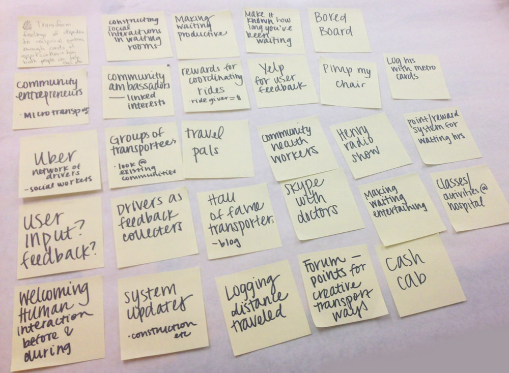

Why
Chronic patients at BJC Healthcare struggled to make their appointments, which had negative effects on their health outcomes. Preliminary research pointed to transportation issues, so the BJC Center for Innovation challenged a group of design students to research and rethink the experience.

We started with in-person interviews with social workers and patients at BJC hospitals. We synthesized our interview notes onto sticky notes and created patient profiles.


Using what we learned from the interviews, we categorized the patient experience into seven steps and mapped out the actions, emotions, questions, high/low points of each step.
 

The experience map reframed our project to focus on the end of the patient experience. Our hypothesis was that people will be more confident getting to their appointments if they know that they'll have a secure ride back home.

We identified three main pain points of this last part of the patient experiencem and focused our project around alleviating these concerns.

We ideated potential solutions to the pain points and mapped five of them on axises of cost and ease of adoption.

The most feasible solution was Travel Pals, a program that connects social work students and chronic patients through rides home from the hospital.

We built a video prototype to pitch the idea to stakeholders.
A few months after the pitch, BJC contacted our team telling us that they'd like to continue validating the Travel Pals concept and build a working prototype. I designed a graphic they could put on a car, which took real patients home.

I was lucky enough to work with Alexis Turim and Patrick Buggy on this project. The car outline was designed by Mourad Mokrane via the Noun Project and the video illustrations borrow heavily from Adrian Johnson. Special thanks to all of the professors and guest lecturers: founder of UNICEF Innovation Unit Erica Kochi, past AIGA president Doug Powell, founder of Mayo Clinic’s Center for Innovation Maggie Breslin, and founder of Tomorrow Partners Gaby Brinks. I have design crushes on all of them. 8 Another shoutout to Karolina Michniewicz and everybody at the BJC Center for Innovation for being incredible partners.